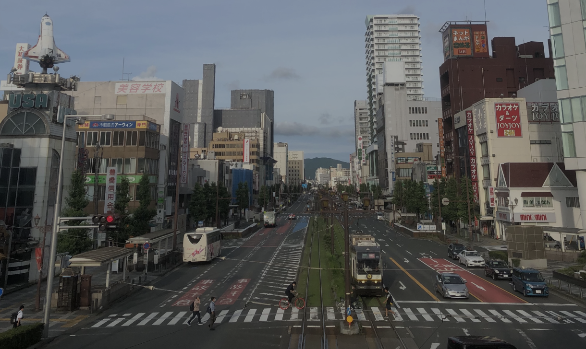
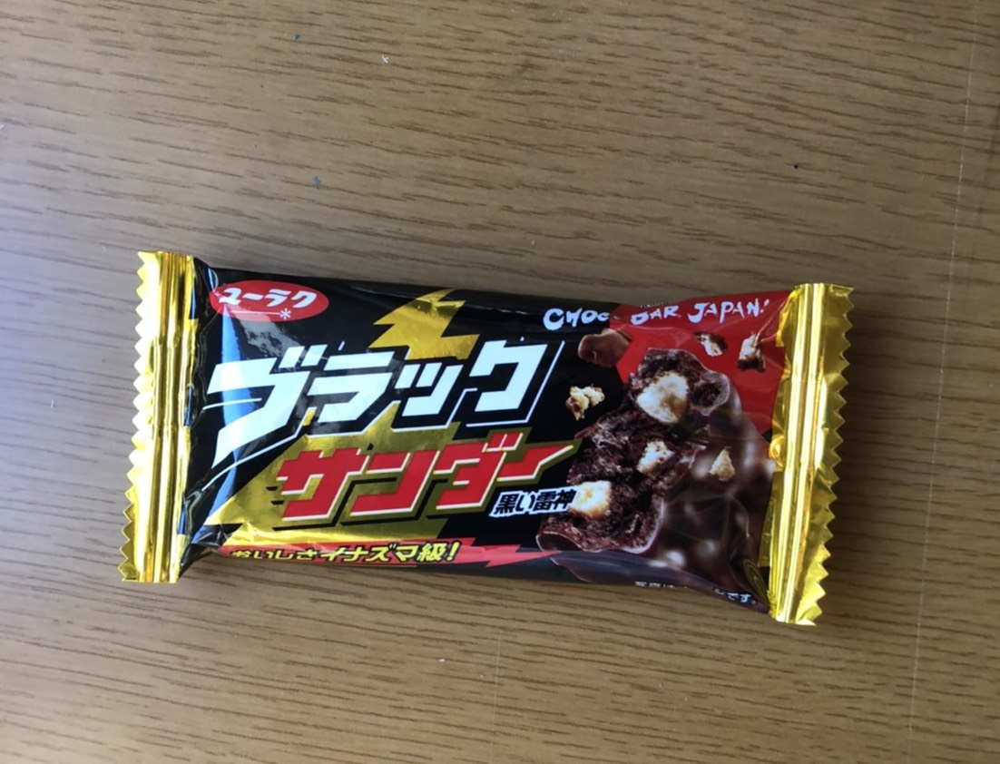
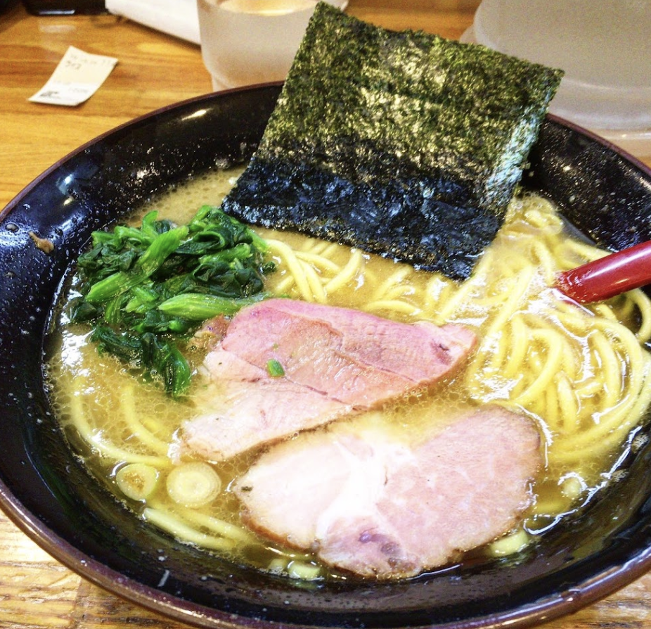
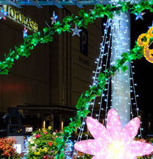

<!DOCTYPE html>
<html>
	<head>
		<meta charset="utf-8" />
		<meta
			name="viewport"
			content="width=device-width, initial-scale=1.0, maximum-scale=1.0, minimum-scale=1.0"
		/>
		<title>Toyohashi in Aichi</title>
		<meta name="keywords" content="WAV, wav, 卓展, 卓, 卓展2021" />
		<meta name="description" content="地元の豊橋の魅力を語ります！行ったことがない、聞いたことがない、って人にも分かりやすく伝えられるように作りました!" />
		<link rel="stylesheet" href="css/normalize.css" />
		<link rel="stylesheet" href="css/main.css" />
		<meta name=“viewport” content=“width=device-width, initial-scale=1.0, maximum-scale=1.0, minimum-scale=1.0”>
	</head>

	<body>
		<!-- ヘッダー開始 -->
		<header class="header">
			<div class="header-content">
				<ul class="header-category txt-medium font-color-black">
					<li><a href="#What's Toyohashi ?" >/What's Toyohashi ?/</a></li>
					<li><a href="#Food">/Food/</a></li>
					<li><a href="#Event">/Event/</a></li>
				</ul>
			</div>
			<!-- ヘッダー終わり -->
		</header>

		<main>
			<section class="section layout-bottom-middle section-inAichi" >
				<div class="posi-rela">
				
				</div>
			<div class="pozi-abso">
				<p class=" txt-center txt-max  font-color-white title-mar">ちょうどイイ。
				</p>
				<p class=" txt-center txt-xxxlarge  font-color-white title-mar" >Toyohashi in Aichi</p>
			</div>
			</section>

			<section id="What's Toyohashi ?" class="section layout-bottom-middle">
				<div class="txt-center content-wrapper">
			  <div class="title-border txt-xxlarge title-mar">What's Toyohashi ?</div>
				<div class="font-color-black txt-xmedium">
					<p class="sub-title-mar">愛知県の南東部に位置する都市。</p>
					<p class="sentence-mar">駅を出れば多くの建物が辺り一面に広がるが、</p>
					<p class="sentence-mar">少し路面電車に揺られると、とことん自然を感じられる</p>
					<p class="sentence-mar">田舎過ぎず、都会過ぎない　×　めちゃくちゃ良い
					</p>
					<span class="dli-arrow-down "></span>
					<p class="txt-xlarge font-color-red sentence-mar2 last-mar">ちょうどイイ。</p>
				</div>
			</section>

			<section id="Food" class="section layout-bottom-middle">
				<div class=" content-wrapper">
					<div class="title-border txt-xxlarge title-mar">Food</div>
					<div class="txt-large title-border-light font-color-green sub-title-mar title-mar-left">
						ブラックサンダー
					</div>
					<div class="dis-fl simple-mar">
						
						<div class="font-color-black txt-medium">
						<p class="txt-center sentence-mar ">
							おいしいチョコレートといえば、ブラックサンダー。
						</p>
						<p class="txt-center sentence-mar">
							実は豊橋発祥なんです。
						</p>
						<p class="txt-center sentence-mar">
							豊橋限定の商品もあるので、ぜひ食べて見ましょう！
						</p>
					</div>
					</div>
					<div class="txt-large title-border-light font-color-green sub-title-mar-2 title-mar-left">
						黒田屋
					</div>
					<div class="dis-fl last-mar simple-mar">
						
						<div class="font-color-black txt-medium">
						<p class="txt-center sentence-mar ">
							駅から徒歩10分ほどのラーメン屋さん。
						</p>
						<p class="txt-center sentence-mar">
							太麺とこってりスープが相性抜群です！
						</p>
						<p class="txt-center sentence-mar ">
							豊橋に来たら、食べないともったいないです！
						</p>
					</div>
					</div>
				</div>
			</section>

			<section id="Event" class="section layout-bottom-middle">
				<div class=" content-wrapper">
					<div class="title-border txt-xxlarge title-mar">Event</div>
					<div class="txt-large title-border-light font-color-green sub-title-mar title-mar-left">
						花火大会
					</div>
					<div class="dis-fl simple-mar">
						
						<div class="font-color-black txt-medium">
						<p class="txt-center sentence-mar ">
							豊橋は手筒花火の発祥地でもあるんです。
						</p>
						<p class="txt-center sentence-mar">
							そのため、毎年多くの花火大会があります。
						</p>
						<p class="txt-center sentence-mar">
							浴衣を着てきれいな花火を見るのは、恒例行事になってます！
						</p>
					</div>
					</div>
					<div class="txt-large title-border-light font-color-green sub-title-mar title-mar-left">
						イルミネーション
					</div>
					<div class="dis-fl last-mar simple-mar">
						
						<div class="font-color-black txt-medium">
						<p class="txt-center sentence-mar ">
							冬になると、駅周辺ではイルミネーションが見られます。
						</p>
						<p class="txt-center sentence-mar">
							毎年新しい種類のイルミネーションが見られて、楽しいです！
						</p>
						<p class="txt-center sentence-mar ">
							めちゃくちゃインスタ映えするのでぜひ来てください！
						</p>
					</div>
					</div>
				</div>
			</section>
		</main>

		<footer class="footer">
			<div class="box">
				
				<p class="font-color-white">Thank you for watching!</p> 
			</div>

		</footer>
	</body>
</html>
